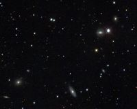
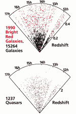

|  |
The most ambitious astronomical survey ever undertaken. The largest three-dimensional reconstruction of the universe ever made. A quarter of the sky -- one hundred million celestial objects -- observed and recorded as 15 terabytes of digital information.
The Sloan Digital Sky Survey will take a giant step in the science of mapping the universe, to create a new and unparalleled picture of the cosmos. As patterns and structures emerge from the survey data, they will illuminate the history and origins of the universe itself.
|  |
Although less than ten percent of the sky has been digitized, the Survey has already produced stunning science. The SDSS has discovered eight of the 10 most distant quasars, including the most distant one. Light left this quasar when the universe was less than a billion years old and was a factor of 6.8 times smaller. The first slice of the 3-D map of the universe from a sample of 15,000 galaxies extends out to three billion light years. The slice from a sample of 1200 quasars extends nearly four times as far. The quality of the digital images has enabled SDSS scientists to use the tiny gravitational distortion of the images of distant galaxies by nearby galaxies to map the extent of the dark matter halos of galaxies, showing that they contain more than twice as much mass as previously believed. Early data also turned up an unusual type of comet and the first solitary brown dwarf ever found.
|
For hundreds of years astronomy has been done one object at a time, using general-purpose telescopes. The SDSS is a new concept -- a specially designed "astronomical experiment" to digitize the brightest 100 million objects and to determine the distances to the million brightest galaxies. The silicon universe created by the SDSS will be accessed by virtually every astronomer. The SDSS sky will be open, day and night, good weather or bad. It will be the field guide to the heavens for the next fifty years. The new approach to astronomical research pioneered by the SDSS has already inspired other astronomical experiments.
The expanse of sky between the visible stars was once the province of astronomers alone. The Sloan Digital Sky Survey will make available to every schoolchild the vast expanse of universe once only accesible to a handful of observers using ultrapowerful telescopes. The Sky Survey will use the power of the Internet to bring into everyone's view the millions of objects beyond the visible stars of our own galaxy to the farthest reaches of the universe.
The Sloan Digital Sky Survey is a joint project of The University of Chicago, Fermilab, the Institute for Advanced Study, the Japan Participation Group, The Johns Hopkins University, the Max-Planck-Institute for Astronomy, New Mexico State University, Princeton University, the United States Naval Observatory, and the University of Washington. Apache Point Observatory, site of the SDSS telescopes, is operated by the Astrophysical Research Consortium (ARC).
Funding for the project has been provided by the Alfred P. Sloan Foundation, the SDSS member institutions, the National Aeronautics and Space Administration, the National Science Foundation, the U.S. Department of Energy, Monbusho, and the Max Planck Society.
 |
Dr. John Peoples of Fermilab is the director of the Sloan Digital Sky Survey. Dr. Arthur Davidsen of The Johns Hopkins University is the chairman of the SDSS Advisory Council, and Dr. Timothy Heckman, also of Hopkins, is the chairman of the Astrophysical Research Consortium. Dr. James Gunn of Princeton University serves as project scientist, and Dr. Michael Turner of The University of Chicago is the SDSS spokesperson. Dr. Bruce Margon of the University of Washington was the chairman of ARC when the SDSS was initiated, and Dr. Donald York of The University of Chicago served as its founding director.